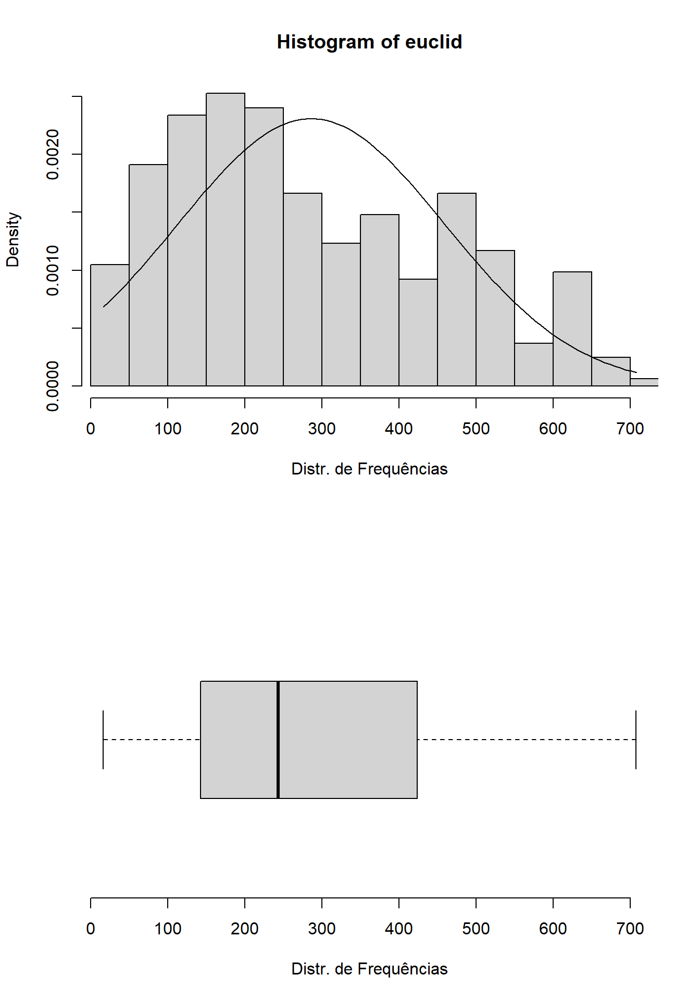

15 R Módulo 6 - Análise de outliers baseada no desvio padrão do centróide
Apresentação
A análise de outliers baseada no desvio padrão do centróide em análise multivariada é uma técnica utilizada para identificar valores discrepantes em uma matriz de dados com várias variáveis. Essa técnica consiste em calcular o centróide dos dados (ou seja, a média de cada variável), e então calcular o desvio padrão de cada observação em relação ao centróide. Os valores que estão a uma distância maior que um certo número de desvios padrão do centróide são considerados outliers. Essa técnica é útil para identificar observações que podem estar afetando a análise de dados multivariados, como análise de componentes principais, e que podem precisar ser tratadas de forma especial. No entanto, é importante lembrar que a identificação de outliers é uma questão subjetiva e depende do contexto da análise e do objetivo do estudo.
15.1 Sobre os dados do PPBio
Usaremos para esse tutorial dados coletados no Programa de Pesquisa em Biodiversidade - PPBio (Veja Programa de Pesquisa em Biodiversidade – PPBio). Nesta base de dados estão armazenadas informações sobre diversos grupos taxonômicos dstribuidos em diversas unidades amostrais (UA’s ou sítios), como peixes, macroinverbrebrados bentônicos, quironomídeos e zooplâncotn, além de dados do habitat, como variáveis físicas e químicas, morfologia do habitat, composição do substrato, estrutura de habitat marginal, entre outros (Figura 15.1).

Figura 15.1: Parte da planilha de dados brutos do PPBio.
Essa é a matriz bruta de dados, porque os valores ainda não foram ajustados para os valores de Captura Por Unidade de Esforço (CPUE), nem foram relativizados ou transformados (Tabela 15.1). As matrizes disponíveis para análises, com suas descrições e tipos de dados recomendados são mostradas na Tabela 15.1.
| Arquivo (.xlsx) | Tipo de matriz | Descrição | Tipo de dados |
|---|---|---|---|
| ppbio06c | Matriz comunitária | | arquivo ppbio06 traz os dados brutos que serão usados nas análises. A matriz de dados brutos contendo 26 localidades em estações do ano diferentes (objetos) x 35 espécies (atributos), antes de qualquer modificação. | | ontagens de indivíduos com alta amplitude de variação, sugerido uso de matriz relativizada. | |
| ppbio06h | Matriz ambiental | O arquivo ppbio06h traz os dados brutos que serão usados nas análises. A matriz de dados brutos contendo 26 localidades em estações diferentes (objetos) x 35 variáveis ambienteis (atributos) medidas em diferentes escalas espaciais, antes de qualquer modificação. | Unidades de medição diferentes (cm, m, °C, mg/L, etc.), com uma alta amplitude de variação, sugerido uso de matriz transformada e/ou reescalada. |
| ppbio06 | Matriz comunitária | | arquivo ppbio06 traz os dados brutos que serão usados nessa análise. A matriz de dados brutos contendo 26 locais/ocasiões (objetos) x 35 espécies (atributos), antes de qualquer modificação. | | ontagens de indivíduos com alta amplitude de variação, sugerido uso de matriz relativizada. | |
| ppbio06cpue | Matriz comunitária | O arquivo ppbio06cpue traz os valores depois de terem sidos ajustados pela Captura Por Unidade de Esforço (CPUE), onde o número de indivíduos de cada espécie em uma determinada UA é dividido pelo esforço de captura daquela UA. Isso significa que os dados foram relativizados pela CPUE. A matriz de dados brutos contendo 26 localidades em estações do ano diferentes (objetos) x 35 espécies (atributos), antes de qualquer modificação. | Densidades de indivíduos (no. de indivíduos por Unidade de Esforço de Captura) com alta amplitude de variação, sugerido uso de matriz relativizada. |
A planilha ppbio contém o delineamento amostral de um dos estudos do Projeto PPBio (Figura 15.2. Nas linhas são apresentadas as abreviações dos nomes das unidades amostrais (UA’s) e nas colunas são apresentados os nomes abreviados das espécies - temos portando uma matriz comunitária (15.1. No corpo da planilha temos os valores para o tipo de dados amostrado. Quantitativo, semi-quatitativo ou qualitativo.
Qual desses tipos de dados você acha que é apresentado na planilha?

Figura 15.2: Associação entre a planilha de dados brutos do PPBio e o delineamento amostral do estudo.
Várias das espécies nessa matriz tem grande importância ecológica, como é o caso de Astyanax bimaculatus 14 (Figura 15.3), que é muito comum em rios intermitentes e serve de alimento para predadores maiores como a espécie Hoplias malabaricus 15 (Figura 15.4).

Figura 15.3: Astyanax bimaculatus, a espécie mais comum da matriz de dados ppbio. Peru, by Eakins, R. Fonte: https://www.fishbase.se/summary/Astianax-bimaculatus.html

Figura 15.4: Hoplias malabaricus, espécie que cresce para se tornar um importante predador. Brazil, by Roselet, F.F.G. Fonte: https://www.fishbase.se/summary/Hoplias-malabaricus.html
15.2 Organização básica
dev.off() #apaga os graficos, se houver algum
rm(list=ls(all=TRUE)) #limpa a memória
cat("\014") #limpa o consoleInstalando os pacotes necessários para esse módulo
install.packages("openxlsx") #importa arquivos do excel
install.packages("moments") #calcula assimetria e curtose dos dados
install.packages("matrixStats") #fornece funções rápidas para a estatística de matrizes
install.packages("gt") #ferramenta para criação de tabelas bonitas e personalizáveisAgora vamos definir o diretório de trabalho. Esse código é usado para obter e definir o diretório de trabalho atual no R. O comando getwd() retorna o caminho do diretório onde o R está lendo e salvando arquivos. O comando setwd() muda esse diretório de trabalho para o caminho especificado entre aspas. No seu caso, você deve ajustar o caminho para o seu próprio diretório de trabalho. Lembre de usar a barra “/” entre os diretórios. E não a contra-barra “\”.
Definindo o diretório de trabalho e installando os pacotes necessários:
15.2.1 Importando a planilha
Note que o símbolo # em programação R significa que o texto que vem depois dele é um comentário e não será executado pelo programa. Isso é útil para explicar o código ou deixar anotações.
- Ajuste a primeira linha do código abaixo para refletir “C:/Seu/Diretório/De/Trabalho/Planilha.xlsx”.
- Ajuste o parâmetro sheet = "Sheet1" para refletir a aba correta do arquivo .xlsx a ser importado.
Alternativamente você pode ir na barra de tarefas e escolhes as opções:
SESSION -> SET WORKING DIRECTORY -> CHOOSE DIRECTORY
library(openxlsx)
m_bruta <- read.xlsx("D:/Elvio/OneDrive/Disciplinas/_EcoNumerica/5.Matrizes/ppbio06c-peixes.xlsx",
rowNames = T, colNames = T,
sheet = "Sheet1")
str(m_bruta)
m_bruta_ma <- as.matrix(m_bruta) #lê m_bruta como uma matriz
str(m_bruta_ma)
#m_bruta
m_bruta_ma[1:5,1:5] #[1:5,1:5] mostra apenas as linhas e colunas de 1 a 5.## 'data.frame': 26 obs. of 35 variables:
## $ ap-davis : num 0 0 0 0 0 0 0 0 0 0 ...
## $ as-bimac : num 1 99 194 19 23 142 5 46 206 16 ...
## $ as-fasci : num 0 0 55 0 1 3 1 0 64 0 ...
## $ ch-bimac : num 0 0 0 0 13 3 0 178 0 0 ...
## $ ci-ocela : num 0 0 0 0 0 0 40 0 0 13 ...
## $ ci-orien : num 0 0 5 0 0 69 9 0 25 24 ...
## $ co-macro : num 0 0 0 0 0 0 0 0 0 0 ...
## $ co-heter : num 0 0 1 0 0 0 0 0 0 0 ...
## $ cr-menez : num 0 0 14 0 0 4 0 0 8 0 ...
## $ cu-lepid : num 0 0 0 0 0 0 0 0 0 0 ...
## $ cy-gilbe : num 0 0 0 0 0 0 0 0 0 0 ...
## $ ge-brasi : num 0 0 3 0 0 0 0 0 1 0 ...
## $ he-margi : num 0 0 0 0 0 1 0 0 0 0 ...
## $ ho-malab : num 0 0 1 5 0 17 10 2 31 4 ...
## $ hy-pusar : num 0 0 9 2 0 43 2 0 11 0 ...
## $ le-melan : num 0 0 0 0 0 0 0 0 0 0 ...
## $ le-piau : num 0 0 3 0 0 1 3 0 2 1 ...
## $ le-taeni : num 0 0 0 0 0 0 0 0 0 0 ...
## $ mo-costa : num 0 0 0 0 0 0 0 0 0 0 ...
## $ mo-lepid : num 0 1 39 0 0 1 0 0 0 0 ...
## $ or-nilot : num 0 2 36 0 0 77 0 0 138 0 ...
## $ pa-manag : num 0 0 0 0 0 0 0 0 0 0 ...
## $ pimel-sp : num 0 0 6 0 0 0 0 0 0 0 ...
## $ po-retic : num 0 0 0 0 0 20 0 0 5 0 ...
## $ po-vivip : num 0 0 47 15 0 221 32 0 326 10 ...
## $ pr-brevi : num 9 0 5 0 1 15 5 2 164 0 ...
## $ ps-rhomb : num 0 0 0 0 0 0 0 0 1 0 ...
## $ ps-genise: num 0 0 0 0 0 0 0 0 1 0 ...
## $ se-heter : num 0 0 40 14 4 60 0 0 38 0 ...
## $ se-piaba : num 0 0 68 0 0 0 0 0 0 0 ...
## $ se-spilo : num 0 0 0 0 0 0 0 0 1 0 ...
## $ st-noton : num 0 0 1 0 0 25 0 0 115 0 ...
## $ sy-marmo : num 0 0 0 0 0 0 1 0 0 0 ...
## $ te-chalc : num 0 0 0 0 0 0 0 0 0 0 ...
## $ tr-signa : num 0 0 18 0 0 15 0 0 7 0 ...
## num [1:26, 1:35] 0 0 0 0 0 0 0 0 0 0 ...
## - attr(*, "dimnames")=List of 2
## ..$ : chr [1:26] "S-A-ZA1" "S-R-CC1" "S-R-CT1" "S-R-CP1" ...
## ..$ : chr [1:35] "ap-davis" "as-bimac" "as-fasci" "ch-bimac" ...
## ap-davis as-bimac as-fasci ch-bimac ci-ocela
## S-A-ZA1 0 1 0 0 0
## S-R-CC1 0 99 0 0 0
## S-R-CT1 0 194 55 0 0
## S-R-CP1 0 19 0 0 0
## S-A-TA1 0 23 1 13 015.3 Reset point
- Aqui usaremos as matrizes relativizadas/transformadas/particionadas, etc
Podemos exibir a planilha depois de ter sido importada para o ambiente R/RStudio usando as funções View(), print() ou head(). Note que essas funções são case-sensitive. A função ignore.case() é uma função do pacote stringr que modifica um padrão para que ele não considere o caso das letras nas correspondências. Por exemplo, se você quiser encontrar todas as ocorrências da letra “a” em um vetor de caracteres, independente de ser “A” ou “a”, você pode usar essa função.
A função head() no RStudio é uma forma de ver as primeiras (n=6) linhas de um objeto, como um vetor, uma matriz, um data frame ou uma lista. Ela é útil para ter uma ideia do conteúdo e da estrutura do objeto.
Também podemos explorar as características da planilha usando as funções str(), mode(), class() e length(). O número de observações ou tamanho do vetor depende do tipo de dados, se eles são uma matrix ou um data.frame.
## 'data.frame': 26 obs. of 35 variables:
## $ ap-davis : num 0 0 0 0 0 0 0 0 0 0 ...
## $ as-bimac : num 1 99 194 19 23 142 5 46 206 16 ...
## $ as-fasci : num 0 0 55 0 1 3 1 0 64 0 ...
## $ ch-bimac : num 0 0 0 0 13 3 0 178 0 0 ...
## $ ci-ocela : num 0 0 0 0 0 0 40 0 0 13 ...
## $ ci-orien : num 0 0 5 0 0 69 9 0 25 24 ...
## $ co-macro : num 0 0 0 0 0 0 0 0 0 0 ...
## $ co-heter : num 0 0 1 0 0 0 0 0 0 0 ...
## $ cr-menez : num 0 0 14 0 0 4 0 0 8 0 ...
## $ cu-lepid : num 0 0 0 0 0 0 0 0 0 0 ...
## $ cy-gilbe : num 0 0 0 0 0 0 0 0 0 0 ...
## $ ge-brasi : num 0 0 3 0 0 0 0 0 1 0 ...
## $ he-margi : num 0 0 0 0 0 1 0 0 0 0 ...
## $ ho-malab : num 0 0 1 5 0 17 10 2 31 4 ...
## $ hy-pusar : num 0 0 9 2 0 43 2 0 11 0 ...
## $ le-melan : num 0 0 0 0 0 0 0 0 0 0 ...
## $ le-piau : num 0 0 3 0 0 1 3 0 2 1 ...
## $ le-taeni : num 0 0 0 0 0 0 0 0 0 0 ...
## $ mo-costa : num 0 0 0 0 0 0 0 0 0 0 ...
## $ mo-lepid : num 0 1 39 0 0 1 0 0 0 0 ...
## $ or-nilot : num 0 2 36 0 0 77 0 0 138 0 ...
## $ pa-manag : num 0 0 0 0 0 0 0 0 0 0 ...
## $ pimel-sp : num 0 0 6 0 0 0 0 0 0 0 ...
## $ po-retic : num 0 0 0 0 0 20 0 0 5 0 ...
## $ po-vivip : num 0 0 47 15 0 221 32 0 326 10 ...
## $ pr-brevi : num 9 0 5 0 1 15 5 2 164 0 ...
## $ ps-rhomb : num 0 0 0 0 0 0 0 0 1 0 ...
## $ ps-genise: num 0 0 0 0 0 0 0 0 1 0 ...
## $ se-heter : num 0 0 40 14 4 60 0 0 38 0 ...
## $ se-piaba : num 0 0 68 0 0 0 0 0 0 0 ...
## $ se-spilo : num 0 0 0 0 0 0 0 0 1 0 ...
## $ st-noton : num 0 0 1 0 0 25 0 0 115 0 ...
## $ sy-marmo : num 0 0 0 0 0 0 1 0 0 0 ...
## $ te-chalc : num 0 0 0 0 0 0 0 0 0 0 ...
## $ tr-signa : num 0 0 18 0 0 15 0 0 7 0 ...
## [1] "list"
## [1] "data.frame"O símbolo ? é usado para acessar a documentação de uma função ou um pacote no R. Como mostrado acima você pode saber mais sobre a função str(), usando o comando ?str. Isso vai abrir uma página no menu de ajuda com a descrição, os argumentos, os valores de retorno e os exemplos da função str(). Você também pode usar o símbolo ? para obter informações sobre um pacote inteiro. Por exemplo, se você quiser saber mais sobre o pacote openxlsx, você pode digitar ?openxlsx. Isso vai abrir uma página com a visão geral, a instalação, os recursos e as referências do pacote solicitado.
Podemos agora calcular o número e a proporção de zeros na matriz usando as funções sum() e length() (Você pode pesquisar o que faz a função length() usando o comando ?length).
15.3.1 Tamanho da matriz
range(m_bruta) #menor e maior valores
length(m_bruta) #no. de colunas
ncol(m_bruta) #no. de N colunas
nrow(m_bruta) #no. de M linhas
sum(lengths(m_bruta)) #soma os nos. de colunas
length(as.matrix(m_bruta)) #tamanho da matriz m x n
sum(m_bruta == 0) # número de observações igual a zero
sum(m_bruta > 0) # número de observações maiores que zero
zeros <- (sum(m_bruta == 0)/length(as.matrix(m_bruta)))*100 # proporção de zeros na matriz
zeros## [1] 0 511
## [1] 35
## [1] 35
## [1] 26
## [1] 910
## [1] 910
## [1] 716
## [1] 194
## [1] 78.68132A matriz de dados apresenta um total de 910 valores que variam entre 0, 511 (menor e maior valores). A matriz m x n tem 26 linhas e 35 colunas. Existem 716 observações iguais a zero e 194 observações maiores que zero, representando um percentual de 78.7% dos valores sendo zeros.
Essas informações podem ser resumidas na Tabela 15.3 que será gerada abaixo.
tamanho <- data.frame(
Comando = c("range", "lenght", "m cols", "n linhas", "Tamanho", "Tamanho",
"Zeros", "Nao zeros", "% Zeros"),
Resultado = c(paste(range(m_bruta), collapse = " - "), length(m_bruta), ncol(m_bruta),
nrow(m_bruta), sum(lengths(m_bruta)), length(as.matrix(m_bruta)), sum(m_bruta == 0),
sum(m_bruta > 0), round(zeros, 1))
)
tamanho## Comando Resultado
## 1 range 0 - 511
## 2 lenght 35
## 3 m cols 35
## 4 n linhas 26
## 5 Tamanho 910
## 6 Tamanho 910
## 7 Zeros 716
## 8 Nao zeros 194
## 9 % Zeros 78.7| Comando | Resultado |
|---|---|
| range | 0 - 511 |
| lenght | 35 |
| m cols | 35 |
| n linhas | 26 |
| Tamanho | 910 |
| Tamanho | 910 |
| Zeros | 716 |
| Nao zeros | 194 |
| % Zeros | 78.7 |
Ou seja, temos uma matriz de tamanho m x n igual a 26 objetos por 35 atributos, onde 78.68% dos valores da matriz são iguais a zero!
15.4 Cálculo de matriz de distâncias Euclidiana (euclid)
Agora vamos calcular a matriz de distâncias euclidianas (BORCARD; GILLET; LEGENDRE, 2018; LEGENDRE; LEGENDRE, 1998) entre as UA´s usando a função dist() (pesquise o que faz essa função usando o comando ?dist).
Pronto, calculamos a matriz de distâncias (Euclidiana). Agora podemos visualizar a matriz.
#euclid
str(euclid)
mode(euclid)
class(euclid)
length(as.matrix(euclid))
as.matrix(euclid)[1:6, 1:6] #mostra as 5 primeiras linhas e colunas da matriz## 'dist' num [1:325] 98.4 228.5 29.2 27.1 294.1 ...
## - attr(*, "Size")= int 26
## - attr(*, "Labels")= chr [1:26] "S-A-ZA1" "S-R-CC1" "S-R-CT1" "S-R-CP1" ...
## - attr(*, "Diag")= logi TRUE
## - attr(*, "Upper")= logi FALSE
## - attr(*, "method")= chr "euclidean"
## - attr(*, "call")= language dist(x = m_bruta, method = "euclidian", diag = TRUE, upper = FALSE)
## [1] "numeric"
## [1] "dist"
## [1] 676
## S-A-ZA1 S-R-CC1 S-R-CT1 S-R-CP1 S-A-TA1 S-R-CT2
## S-A-ZA1 0.00000 98.43780 228.5235 29.24038 27.09243 294.0629
## S-R-CC1 98.43780 0.00000 154.2433 82.79493 77.25283 261.3905
## S-R-CT1 228.52352 154.24331 0.0000 208.52338 209.69263 224.9133
## S-R-CP1 29.24038 82.79493 208.5234 0.00000 23.25941 271.4922
## S-A-TA1 27.09243 77.25283 209.6926 23.25941 0.00000 283.7869
## S-R-CT2 294.06292 261.39051 224.9133 271.49217 283.78689 0.0000Note que a matriz euclid está como uma classe dist. Uma matriz do tipo dist no R é um objeto que armazena as distâncias entre as linhas de uma matriz ou um data frame. Ela é criada pela função dist(), que calcula as distâncias usando diferentes medidas, como “euclidean”, “manhattan”, “canberra”, “binary” ou “minkowski” (HORTON; KLEINMAN, 2015) (Figura 15.4).
Visualizando a matriz de distâncias, observamos que ela:
é uma matriz quadrada que contém as distâncias entre cada par de elementos do conjuto de dados,
terá a dimensão m x m (m=linhas, n=colunas) e,
e cada elemento da matriz será a distância entre cada par de observações ou objetos.
A matriz de distâncias é simétrica, pois a distância entre i e j é igual à distância entre j e i. A matriz de distâncias também tem diagonal zero, pois a distância entre uma observação e ela mesma é zero.
| Distância | Descrição |
|---|---|
| Euclidiana | Mede a distância entre dois pontos no espaço, seguindo o teorema de Pitágoras. É uma medida de distância direta entre dois pontos. |
| Manhattan | Também conhecida como distância da cidade, mede a distância como se estivesse dirigindo em uma cidade. A distância é a soma das diferenças absolutas de cada coordenada. |
| Canberra | Leva em consideração a proporção de diferenças em relação ao tamanho total das variáveis. |
| Binária | Mede a semelhança entre dois objetos. É 0 quando dois valores são iguais e 1 caso contrário. |
| Minkowski | É uma generalização da distância euclidiana e da distância de Manhattan. A distância é controlada por um parâmetro P, que determina a ordem da distância. |
A matriz euclid está como uma classe dist, mas podemos transformá-la em uma classe matrix usando a função as.matrix().
euclid_ma <- (as.matrix(euclid))
#View(euclid_ma)
str(euclid_ma)
mode(euclid_ma)
class(euclid_ma)
euclid_ma[1:5, 1:5] #mostra as 5 primeiras linhas e colunas da matriz## num [1:26, 1:26] 0 98.4 228.5 29.2 27.1 ...
## - attr(*, "dimnames")=List of 2
## ..$ : chr [1:26] "S-A-ZA1" "S-R-CC1" "S-R-CT1" "S-R-CP1" ...
## ..$ : chr [1:26] "S-A-ZA1" "S-R-CC1" "S-R-CT1" "S-R-CP1" ...
## [1] "numeric"
## [1] "matrix" "array"
## S-A-ZA1 S-R-CC1 S-R-CT1 S-R-CP1 S-A-TA1
## S-A-ZA1 0.00000 98.43780 228.5235 29.24038 27.09243
## S-R-CC1 98.43780 0.00000 154.2433 82.79493 77.25283
## S-R-CT1 228.52352 154.24331 0.0000 208.52338 209.69263
## S-R-CP1 29.24038 82.79493 208.5234 0.00000 23.25941
## S-A-TA1 27.09243 77.25283 209.6926 23.25941 0.0000015.5 Calculando o centróide da matriz de distâncias euclid
Primeiro algumas informações básicas da matriz
range(m_bruta)
range(euclid)
min(euclid)
max(euclid)
mean(euclid) #CENTROIDE!! OU Grand mean
sd(euclid) #Standard deviation
centroide <- mean(euclid)
centroide## [1] 0 511
## [1] 16.27882 707.32666
## [1] 16.27882
## [1] 707.3267
## [1] 285.9043
## [1] 172.9708
## [1] 285.9043A função mean() calcula a média de todos os valores da matriz de distâncias, ou seja, a média multivariada, que é o centróide. Nesse caso o centroide assume o valor de 285.9.
Usamos agora a fórmula m*(m-1)/2, onde m é o no. de objetos sendo comparados, para calcular quantas distâcias temos na nossa matriz.
## [1] 325
## [1] 26
## [1] 325
## Min. 1st Qu. Median Mean 3rd Qu. Max.
## 16.28 142.70 242.82 285.90 423.64 707.33Temos então que m é 26 objetos (ou linhas), e portanto, a matriz de distâncias tem 325 valores.
Fazemos agora um breve sumário do que foi calculado até agora com base na matriz de distâncias euclid.
Sumario1 <- cbind(min(euclid),
max(euclid),
sd(euclid),
mean(euclid),
length(euclid))
colnames(Sumario1) <- c("Minimo", "Maximo", "Desv.Padr", "Media", "m(m-1)/2")
rownames(Sumario1) <- ("Valores")
Sumario1## Minimo Maximo Desv.Padr Media m(m-1)/2
## Valores 16.27882 707.3267 172.9708 285.9043 32515.6 Distribuição de frequências da matriz de distâncias euclid
O código abaixo vai plotar um histograma e um boxplot da distribuição de dados armazenada em euclid. Também é adicionada uma curva normal teórica ao histograma utilizando a média e o desvio padrão dos dados (Figura 15.5). Atente que o comando par(mfrow=c(2,1)) define o layout dos gráficos, especificando que serão plotados 2 gráficos em uma coluna. As funções floor(min(euclid)), ceiling(max(euclid)) definem os limites dos graficos pelo valores mínimo e máximo do objeto (euclid).
## [1] 16.27882 707.32666par(mfrow=c(2,1))
hist(euclid,
breaks = 15, #determina o no. de colunas do histograma
xlim = range(floor(min(euclid)), ceiling(max(euclid))),
xlab = "Distr. de Frequências",
freq = FALSE)
curve(dnorm(x, mean=mean(euclid), sd=sd(euclid)), add=TRUE)
boxplot.default(euclid, horizontal = TRUE, frame = FALSE,
xlab="Distr. de Frequências",
ylim=c(floor(min(euclid)), ceiling(max(euclid)))) #Limites do eixo Y
Figura 15.5: Distribuições de frequências da matriz de distâncias euclid
O comando abaixo apaga os gráficos, use-o apenas se necessário.
15.7 Procurando outliers
15.7.1 Listas de distâncias
Vamos agora criar uma lista com as distâncias em desvio padrão entre cada objeto e o centróide, baseada na matriz de distâncias euclid_ma (ou outra matriz de distâncias criada a partir de uma matriz relativizada/transformada ou bruta, dependendo do arquivo escolhido). As distâncias médias do centroide, expressas em desvios padrão, também podem ser chamadas de z-scores.
Para esse cálculo é necessário que a matriz de distâncias (do tipo dist) seja do tipo matrix. Por isso usamos o comando as.matrix e removemos a diagonal da nova matriz euclid_ma. Códigos a seguir.
15.7.1.1 Removendo os zeros da matriz de distâncias
## Warning: pacote 'matrixStats' foi compilado no R versão 4.4.3##
## Anexando pacote: 'matrixStats'## O seguinte objeto é mascarado por 'package:dplyr':
##
## countlibrary(moments)
euclid_ma <- as.matrix(euclid)
euclid_ma
range(euclid_ma) #valor errado
mean(euclid_ma) #valor errado
sd(euclid_ma) #valor errado
is.na(euclid_ma) <- euclid_ma==0 #atribui n.a. aos valores = 0
mean(euclid_ma, na.rm=T) #valor correto, omite valores n.a. do calculo
mean(euclid_ma, na.rm=T) #valor correto, omite valores n.a. do calculo
sd(euclid_ma, na.rm=T) #valor correto, omite valores n.a. do calculo
#colMeans(euclid_ma, na.rm=T) #omite valores n.a. do calculo
#rowMeans(euclid_ma, na.rm=T) #omite valores n.a. do calculo## S-A-ZA1 S-R-CC1 S-R-CT1 S-R-CP1 S-A-TA1 S-R-CT2 S-R-CP2
## S-A-ZA1 0.00000 98.43780 228.5235 29.24038 27.09243 294.0629 53.40412
## S-R-CC1 98.43780 0.00000 154.2433 82.79493 77.25283 261.3905 108.10180
## S-R-CT1 228.52352 154.24331 0.0000 208.52338 209.69263 224.9133 224.09150
## S-R-CP1 29.24038 82.79493 208.5234 0.00000 23.25941 271.4922 49.22398
## S-A-TA1 27.09243 77.25283 209.6926 23.25941 0.00000 283.7869 57.82733
## S-R-CT2 294.06292 261.39051 224.9133 271.49217 283.78689 0.0000 268.95167
## S-R-CP2 53.40412 108.10180 224.0915 49.22398 57.82733 268.9517 0.00000
## S-A-TA2 183.74439 185.75791 261.8301 181.24845 166.66133 326.3327 190.15257
## S-R-CT3 460.42155 428.64437 366.6429 443.90877 453.59674 238.3799 438.54532
## S-R-CP3 34.17601 88.06816 215.2557 31.32092 33.13608 275.0436 40.37326
## S-A-TA3 333.86674 274.45765 269.9444 321.82604 309.19735 360.8213 334.61769
## S-R-CT4 187.51533 213.67265 273.0769 189.67604 191.60898 298.0084 190.90835
## S-R-CP4 81.58431 127.98437 226.6208 69.86415 85.24084 238.5351 57.30620
## S-A-TA4 478.64601 402.05970 359.7819 464.33932 453.15560 450.2344 478.08995
## B-A-MU1 190.62529 209.01196 287.5257 191.40272 190.90312 344.8086 197.56012
## B-R-ET1 36.13862 102.02941 228.2740 43.89761 42.52058 291.0859 63.79655
## B-A-GU1 16.27882 97.90301 227.0507 30.36445 28.40775 293.4110 55.07268
## B-R-PC2 91.52595 98.07650 204.8560 86.04650 84.49260 282.9558 103.56158
## B-A-MU2 119.74974 68.23489 165.6351 106.08958 103.04368 262.9848 125.71396
## B-A-GU2 110.95495 147.95607 249.2348 114.19282 113.77610 305.9902 122.87799
## B-R-PC3 151.57506 133.59266 183.3085 135.95588 140.16776 259.3260 157.58490
## B-A-MU3 534.53718 441.89592 367.2261 516.37293 513.70809 451.3635 530.43944
## B-A-GU3 353.04249 363.59180 396.0858 353.76829 353.56612 414.4539 356.90195
## B-R-PC4 89.73294 127.93748 229.5801 87.46999 89.97778 295.9341 103.55675
## B-A-MU4 641.28309 612.29405 595.5023 631.36598 633.67026 590.7597 633.81385
## B-A-GU4 230.36059 244.38903 302.0546 230.92640 230.49512 341.1700 236.11438
## S-A-TA2 S-R-CT3 S-R-CP3 S-A-TA3 S-R-CT4 S-R-CP4 S-A-TA4
## S-A-ZA1 183.7444 460.4215 34.17601 333.8667 187.5153 81.58431 478.6460
## S-R-CC1 185.7579 428.6444 88.06816 274.4576 213.6726 127.98437 402.0597
## S-R-CT1 261.8301 366.6429 215.25566 269.9444 273.0769 226.62083 359.7819
## S-R-CP1 181.2484 443.9088 31.32092 321.8260 189.6760 69.86415 464.3393
## S-A-TA1 166.6613 453.5967 33.13608 309.1973 191.6090 85.24084 453.1556
## S-R-CT2 326.3327 238.3799 275.04363 360.8213 298.0084 238.53511 450.2344
## S-R-CP2 190.1526 438.5453 40.37326 334.6177 190.9084 57.30620 478.0899
## S-A-TA2 0.0000 478.9008 182.86060 198.3053 264.0038 200.93282 360.8130
## S-R-CT3 478.9008 0.0000 449.24826 478.0994 419.5474 411.12529 530.0566
## S-R-CP3 182.8606 449.2483 0.00000 324.5351 190.8612 74.14850 467.2216
## S-A-TA3 198.3053 478.0994 324.53505 0.0000 384.4750 344.01599 164.3624
## S-R-CT4 264.0038 419.5474 190.86121 384.4750 0.0000 195.29977 515.1932
## S-R-CP4 200.9328 411.1253 74.14850 344.0160 195.2998 0.00000 486.2016
## S-A-TA4 360.8130 530.0566 467.22157 164.3624 515.1932 486.20160 0.0000
## B-A-MU1 262.6481 494.5402 192.39023 377.5142 265.3413 207.01208 506.2549
## B-R-ET1 186.4457 461.2114 47.45524 334.1841 190.2735 88.34025 478.2384
## B-A-GU1 183.8777 462.0985 35.22783 333.2807 189.3278 82.22530 477.9676
## B-R-PC2 195.6246 447.5008 90.57041 315.9209 190.5282 122.53571 451.2815
## B-A-MU2 197.8686 427.9603 110.62549 282.7313 222.6971 140.52046 407.6175
## B-A-GU2 214.5623 466.3872 115.52922 352.2528 207.3089 137.12403 491.9075
## B-R-PC3 223.6672 423.6402 147.47542 315.7942 220.0114 170.50220 440.0898
## B-A-MU3 522.9532 505.9802 520.09038 399.2405 563.5140 534.39873 336.9926
## B-A-GU3 397.2719 518.7784 354.25273 483.3363 352.7846 362.13671 590.8849
## B-R-PC4 202.8398 461.7597 94.17006 341.0029 182.5541 119.84991 481.9544
## B-A-MU4 651.0146 647.9599 634.01104 643.0435 659.8833 626.19965 674.7548
## B-A-GU4 292.6124 476.7599 231.75849 398.4708 265.0623 244.09834 521.8716
## B-A-MU1 B-R-ET1 B-A-GU1 B-R-PC2 B-A-MU2 B-A-GU2 B-R-PC3
## S-A-ZA1 190.6253 36.13862 16.27882 91.52595 119.74974 110.95495 151.5751
## S-R-CC1 209.0120 102.02941 97.90301 98.07650 68.23489 147.95607 133.5927
## S-R-CT1 287.5257 228.27396 227.05066 204.85605 165.63514 249.23483 183.3085
## S-R-CP1 191.4027 43.89761 30.36445 86.04650 106.08958 114.19282 135.9559
## S-A-TA1 190.9031 42.52058 28.40775 84.49260 103.04368 113.77610 140.1678
## S-R-CT2 344.8086 291.08590 293.41097 282.95583 262.98479 305.99020 259.3260
## S-R-CP2 197.5601 63.79655 55.07268 103.56158 125.71396 122.87799 157.5849
## S-A-TA2 262.6481 186.44570 183.87768 195.62464 197.86864 214.56235 223.6672
## S-R-CT3 494.5402 461.21145 462.09847 447.50084 427.96028 466.38718 423.6402
## S-R-CP3 192.3902 47.45524 35.22783 90.57041 110.62549 115.52922 147.4754
## S-A-TA3 377.5142 334.18408 333.28066 315.92088 282.73132 352.25275 315.7942
## S-R-CT4 265.3413 190.27349 189.32776 190.52821 222.69710 207.30895 220.0114
## S-R-CP4 207.0121 88.34025 82.22530 122.53571 140.52046 137.12403 170.5022
## S-A-TA4 506.2549 478.23843 477.96757 451.28151 407.61747 491.90751 440.0898
## B-A-MU1 0.0000 193.24078 183.63823 201.66556 151.28781 198.33557 225.3242
## B-R-ET1 193.2408 0.00000 36.53765 97.11334 119.98333 112.60107 151.2977
## B-A-GU1 183.6382 36.53765 0.00000 91.72786 115.33863 98.15294 149.6529
## B-R-PC2 201.6656 97.11334 91.72786 0.00000 114.92171 141.58390 114.7606
## B-A-MU2 151.2878 119.98333 115.33863 114.92171 0.00000 153.39817 143.1049
## B-A-GU2 198.3356 112.60107 98.15294 141.58390 153.39817 0.00000 173.1011
## B-R-PC3 225.3242 151.29772 149.65293 114.76062 143.10486 173.10113 0.0000
## B-A-MU3 505.4424 530.61097 531.72831 497.81221 422.87823 539.86572 476.5574
## B-A-GU3 381.5508 348.29729 342.49380 360.00556 364.76705 257.95736 337.1735
## B-R-PC4 205.1536 95.01579 89.16838 122.22520 142.70249 139.05035 150.8211
## B-A-MU4 498.8387 627.17462 635.41089 625.57414 550.83754 632.75193 618.9628
## B-A-GU4 289.1885 227.41592 219.20538 242.81886 251.58299 129.34837 239.0000
## B-A-MU3 B-A-GU3 B-R-PC4 B-A-MU4 B-A-GU4
## S-A-ZA1 534.5372 353.0425 89.73294 641.2831 230.3606
## S-R-CC1 441.8959 363.5918 127.93748 612.2940 244.3890
## S-R-CT1 367.2261 396.0858 229.58005 595.5023 302.0546
## S-R-CP1 516.3729 353.7683 87.46999 631.3660 230.9264
## S-A-TA1 513.7081 353.5661 89.97778 633.6703 230.4951
## S-R-CT2 451.3635 414.4539 295.93411 590.7597 341.1700
## S-R-CP2 530.4394 356.9019 103.55675 633.8139 236.1144
## S-A-TA2 522.9532 397.2719 202.83984 651.0146 292.6124
## S-R-CT3 505.9802 518.7784 461.75968 647.9599 476.7599
## S-R-CP3 520.0904 354.2527 94.17006 634.0110 231.7585
## S-A-TA3 399.2405 483.3363 341.00293 643.0435 398.4708
## S-R-CT4 563.5140 352.7846 182.55410 659.8833 265.0623
## S-R-CP4 534.3987 362.1367 119.84991 626.1996 244.0983
## S-A-TA4 336.9926 590.8849 481.95435 674.7548 521.8716
## B-A-MU1 505.4424 381.5508 205.15360 498.8387 289.1885
## B-R-ET1 530.6110 348.2973 95.01579 627.1746 227.4159
## B-A-GU1 531.7283 342.4938 89.16838 635.4109 219.2054
## B-R-PC2 497.8122 360.0056 122.22520 625.5741 242.8189
## B-A-MU2 422.8782 364.7670 142.70249 550.8375 251.5830
## B-A-GU2 539.8657 257.9574 139.05035 632.7519 129.3484
## B-R-PC3 476.5574 337.1735 150.82109 618.9628 239.0000
## B-A-MU3 0.0000 624.8288 534.66812 519.9981 566.2808
## B-A-GU3 624.8288 0.0000 357.35557 707.3267 134.3763
## B-R-PC4 534.6681 357.3556 0.00000 641.2628 241.6402
## B-A-MU4 519.9981 707.3267 641.26282 0.0000 669.3982
## B-A-GU4 566.2808 134.3763 241.64023 669.3982 0.0000
## [1] 0.0000 707.3267
## [1] 274.908
## [1] 178.1842
## [1] 285.9043
## [1] 285.9043
## [1] 172.837515.7.1.2 Criando uma Lista
centroide_ma <- mean(euclid_ma, na.rm=T)
av.dist <- (as.matrix(colMeans(euclid_ma, na.rm=T)))
av.desvpad <- (as.matrix(colSds(euclid_ma, na.rm=T)))
dp.centroide_ma <- (av.dist-centroide_ma)/(colSds(av.dist)) #ou z-scores
list <- as.matrix(cbind(av.dist, av.desvpad, dp.centroide_ma))
list## [,1] [,2] [,3]
## S-A-ZA1 202.2608 175.36143 -0.74136373
## S-R-CC1 205.9912 142.40233 -0.70830031
## S-R-CT1 266.3790 93.46194 -0.17306037
## S-R-CP1 195.7828 170.97514 -0.79878039
## S-A-TA1 195.8495 170.39163 -0.79818963
## S-R-CT2 317.0479 82.87727 0.27603716
## S-R-CP2 207.1435 167.09006 -0.69808647
## S-A-TA2 268.5172 124.64348 -0.15410841
## S-R-CT3 455.6678 68.84928 1.50467759
## S-R-CP3 199.1922 170.79087 -0.76856181
## S-A-TA3 347.0119 92.95522 0.54161944
## S-R-CT4 280.9253 131.44373 -0.04413038
## S-R-CP4 217.3521 157.62618 -0.60760370
## S-A-TA4 458.7988 93.50892 1.53242940
## B-A-MU1 278.0482 116.17286 -0.06963167
## B-R-ET1 205.3272 169.74682 -0.71418525
## B-A-GU1 200.2219 174.32564 -0.75943496
## B-R-PC2 215.0274 152.54520 -0.62820821
## B-A-MU2 210.8910 128.79692 -0.66487097
## B-A-GU2 229.0481 151.90782 -0.50393825
## B-R-PC3 235.2979 130.07777 -0.44854354
## B-A-MU3 499.5754 64.70789 1.89384716
## B-A-GU3 394.6795 116.02951 0.96411611
## B-R-PC4 225.0953 158.58714 -0.53897264
## B-A-MU4 624.1237 45.46670 2.99776610
## B-A-GU4 298.2560 130.86907 0.10947773Ordenamos as distâncias da maior para a menor.
colnames(list, do.NULL = FALSE)
colnames(list) <- c("Av.Dist", "Av.StDev", "DP.Centroide")
list2 <- list[order(list[,1], decreasing = TRUE),] #[,1] ou o nome da coluna
list2## [1] "col1" "col2" "col3"
## Av.Dist Av.StDev DP.Centroide
## B-A-MU4 624.1237 45.46670 2.99776610
## B-A-MU3 499.5754 64.70789 1.89384716
## S-A-TA4 458.7988 93.50892 1.53242940
## S-R-CT3 455.6678 68.84928 1.50467759
## B-A-GU3 394.6795 116.02951 0.96411611
## S-A-TA3 347.0119 92.95522 0.54161944
## S-R-CT2 317.0479 82.87727 0.27603716
## B-A-GU4 298.2560 130.86907 0.10947773
## S-R-CT4 280.9253 131.44373 -0.04413038
## B-A-MU1 278.0482 116.17286 -0.06963167
## S-A-TA2 268.5172 124.64348 -0.15410841
## S-R-CT1 266.3790 93.46194 -0.17306037
## B-R-PC3 235.2979 130.07777 -0.44854354
## B-A-GU2 229.0481 151.90782 -0.50393825
## B-R-PC4 225.0953 158.58714 -0.53897264
## S-R-CP4 217.3521 157.62618 -0.60760370
## B-R-PC2 215.0274 152.54520 -0.62820821
## B-A-MU2 210.8910 128.79692 -0.66487097
## S-R-CP2 207.1435 167.09006 -0.69808647
## S-R-CC1 205.9912 142.40233 -0.70830031
## B-R-ET1 205.3272 169.74682 -0.71418525
## S-A-ZA1 202.2608 175.36143 -0.74136373
## B-A-GU1 200.2219 174.32564 -0.75943496
## S-R-CP3 199.1922 170.79087 -0.76856181
## S-A-TA1 195.8495 170.39163 -0.79818963
## S-R-CP1 195.7828 170.97514 -0.7987803915.7.2 Distribuição de frequências das distâncias médias para o centróide av.dist
Observe o valor maximo e minimo gerados pela função range() e substitua nas linhas de código assinaladas com #. Aqui o menor valor foi 195.7828431 e o maior valor foi 624.1236964. Use valores maiores para facilitar a visualização no gráfico (Figura 15.6).
par(mfrow=c(3,1))
hist(list2[, "Av.Dist"],
breaks = 15, #determina o no. de colunas do histograma
xlab = "Distr. de Frequências das Distâncias (em dp) para o centroide",
main = "Distribuição de Frequência da distância média para o centroide",
xlim = range(floor(min(av.dist)), ceiling(max(av.dist))), #substitua aqui o menor e maior valor do `range()`
freq = T)
hist(list2[, "Av.Dist"],
breaks = 15, #determina o no. de colunas do histograma
xlab = "Distr. de Frequências das Distâncias (em dp) para o centroide",
main = "Curva de normalidade ajustada para a Distribuição de Frequência",
xlim = range(floor(min(av.dist)), ceiling(max(av.dist))), #substitua aqui o menor e maior valor do `range()`
freq = F)
curve(dnorm(x, mean=mean(list2[, "Av.Dist"]), sd=sd(list2[, "Av.Dist"])), add=TRUE)
boxplot.default(list2[, "Av.Dist"], horizontal = TRUE, frame = FALSE,
xlab="Distr. de Frequências",
ylim=c(floor(min(av.dist)), ceiling(max(av.dist)))) #substitua aqui o menor e maior valor do `range()`
Figura 15.6: Distribuição de frequências das distâncias médias para o centroide.
15.7.2.1 Distribuição de frequências dos desvios padões das distâncias médias para o centróide DP.Centroide
Observe o valor máximo e mínimo gerados pela função range() e substitua nas linhas de código assinaladas com #. Aqui o menor valor foi -0.7987804 e o maior valor foi 2.9977661. Use valores maiores para facilitar a visualização no gráfico (Figura 15.7).
range(dp.centroide_ma)
par(mfrow=c(3,1))
hist(list2[, "DP.Centroide"],
breaks = 15, #determina o no. de colunas do histograma
xlab = "Distr. de Frequências das Distâncias dos desvios padões para o centroide",
main = "Distribuição de Frequência dos desvio padões das distâncias médias para o centroide",
xlim = range(floor(min(dp.centroide_ma)), ceiling(max(dp.centroide_ma))), #substitua aqui o menor e maior valor do `range()`
freq = T)
hist(list2[, "DP.Centroide"],
breaks = 15, #determina o no. de colunas do histograma
xlab = "Distr. de Frequências das Distâncias dos desvios padrões das distâncias médias para o centroide",
main = "Curva de normalidade ajustada para a Distribuição de Frequência",
xlim = range(floor(min(dp.centroide_ma)), ceiling(max(dp.centroide_ma))), #substitua aqui o menor e maior valor do `range()`
freq = F)
curve(dnorm(x, mean=mean(list2[, "DP.Centroide"]), sd=sd(list2[, "DP.Centroide"])), add=TRUE)
boxplot.default(list2[, "DP.Centroide"], horizontal = TRUE, frame = FALSE,
xlab="Distr. de Frequências",
ylim=c(floor(min(dp.centroide_ma)), ceiling(max(dp.centroide_ma)))) #substitua aqui o menor e maior valor do `range()`
Figura 15.7: Distribuição de frequências dos desvios padões das distâncias médias para o centroide.
## [1] -0.7987804 2.9977661Se necessário apague os gráficos
15.8 Lista final de outliers
Agora fazemos a lista final de distâncias com os outliers baseados em um ‘cutoff’.
Note que o ‘cutoff’ foi estabelecido no código acima no vetor ‘cutoff <-’. Ou seja, o ‘cutoff’ definindo quem serão considerados outliers, foi estabelecido como sendo valores de +2.0 e -2.0 desvios padrões da média multivariada ou centroide. Valores acima ou abaixo do ‘cutoff’ definido recebem o nome “OUT”, na coluna “Outliers”. Criada com o código abaixo.
library(gt)
format(cutoff, nsmall = 1)
listf <- as.data.frame(list2)
listf$Outliers <- ifelse(listf$DP.Centroide>-cutoff #CUTOFF MENOR QUE -'cutoff
& listf$DP.Centroide<cutoff, #CUTOFF MAIOR QUE 'cutoff'
"", "OUT")
listf
gt(cbind(Sitios=rownames(listf),listf))## [1] "2.0"
## Av.Dist Av.StDev DP.Centroide Outliers
## B-A-MU4 624.1237 45.46670 2.99776610 OUT
## B-A-MU3 499.5754 64.70789 1.89384716
## S-A-TA4 458.7988 93.50892 1.53242940
## S-R-CT3 455.6678 68.84928 1.50467759
## B-A-GU3 394.6795 116.02951 0.96411611
## S-A-TA3 347.0119 92.95522 0.54161944
## S-R-CT2 317.0479 82.87727 0.27603716
## B-A-GU4 298.2560 130.86907 0.10947773
## S-R-CT4 280.9253 131.44373 -0.04413038
## B-A-MU1 278.0482 116.17286 -0.06963167
## S-A-TA2 268.5172 124.64348 -0.15410841
## S-R-CT1 266.3790 93.46194 -0.17306037
## B-R-PC3 235.2979 130.07777 -0.44854354
## B-A-GU2 229.0481 151.90782 -0.50393825
## B-R-PC4 225.0953 158.58714 -0.53897264
## S-R-CP4 217.3521 157.62618 -0.60760370
## B-R-PC2 215.0274 152.54520 -0.62820821
## B-A-MU2 210.8910 128.79692 -0.66487097
## S-R-CP2 207.1435 167.09006 -0.69808647
## S-R-CC1 205.9912 142.40233 -0.70830031
## B-R-ET1 205.3272 169.74682 -0.71418525
## S-A-ZA1 202.2608 175.36143 -0.74136373
## B-A-GU1 200.2219 174.32564 -0.75943496
## S-R-CP3 199.1922 170.79087 -0.76856181
## S-A-TA1 195.8495 170.39163 -0.79818963
## S-R-CP1 195.7828 170.97514 -0.79878039| Sitios | Av.Dist | Av.StDev | DP.Centroide | Outliers |
|---|---|---|---|---|
| B-A-MU4 | 624.1237 | 45.46670 | 2.99776610 | OUT |
| B-A-MU3 | 499.5754 | 64.70789 | 1.89384716 | |
| S-A-TA4 | 458.7988 | 93.50892 | 1.53242940 | |
| S-R-CT3 | 455.6678 | 68.84928 | 1.50467759 | |
| B-A-GU3 | 394.6795 | 116.02951 | 0.96411611 | |
| S-A-TA3 | 347.0119 | 92.95522 | 0.54161944 | |
| S-R-CT2 | 317.0479 | 82.87727 | 0.27603716 | |
| B-A-GU4 | 298.2560 | 130.86907 | 0.10947773 | |
| S-R-CT4 | 280.9253 | 131.44373 | -0.04413038 | |
| B-A-MU1 | 278.0482 | 116.17286 | -0.06963167 | |
| S-A-TA2 | 268.5172 | 124.64348 | -0.15410841 | |
| S-R-CT1 | 266.3790 | 93.46194 | -0.17306037 | |
| B-R-PC3 | 235.2979 | 130.07777 | -0.44854354 | |
| B-A-GU2 | 229.0481 | 151.90782 | -0.50393825 | |
| B-R-PC4 | 225.0953 | 158.58714 | -0.53897264 | |
| S-R-CP4 | 217.3521 | 157.62618 | -0.60760370 | |
| B-R-PC2 | 215.0274 | 152.54520 | -0.62820821 | |
| B-A-MU2 | 210.8910 | 128.79692 | -0.66487097 | |
| S-R-CP2 | 207.1435 | 167.09006 | -0.69808647 | |
| S-R-CC1 | 205.9912 | 142.40233 | -0.70830031 | |
| B-R-ET1 | 205.3272 | 169.74682 | -0.71418525 | |
| S-A-ZA1 | 202.2608 | 175.36143 | -0.74136373 | |
| B-A-GU1 | 200.2219 | 174.32564 | -0.75943496 | |
| S-R-CP3 | 199.1922 | 170.79087 | -0.76856181 | |
| S-A-TA1 | 195.8495 | 170.39163 | -0.79818963 | |
| S-R-CP1 | 195.7828 | 170.97514 | -0.79878039 |
15.9 Particionando a matriz
Talvez seja necessário particionar a matriz bruta para remover os outliers. Isso pode ser feito com os códigos abaixo. Atente para o vetor part. Ele define quais objetos ou UA’s serão particionados.
## [1] "B-A-MU4" "B-A-MU3" "S-A-TA4" "S-R-CT3"Criamos uma nova matriz particionada m_bruta_part sem B-A-MU4, B-A-MU3, S-A-TA4, S-R-CT3, que apresentavam valores acima do cutoff para outliers.

Figura 15.8: Apareiodon davisi, importante espécie bentopelágica das bacias dos rios Jaguaribe e Paraíba. Brazil, by Ramos, T.P.A. Fonte: https://www.fishbase.se/summary/Astianax-bimaculatus.html
](imagens/spp/genis.jpg)
Figura 15.9: Pseudancistrus genisetiger, uma espécie endêmica das bacias hidrográfcas do nordeste. By eplanetcatfish.com. Fonte: https://www.planetcatfish.com (Provável identificação errada do espécime da foto)](eplanetcatfish.jpg)
Use o a função View(m_bruta_part) e procure linhas ou colunas na matriz m_bruta_part onde todos os valores são zero. Quais espécies você encontrou que deixaram de ocorrer na comunidade depois que as UA’s outliers foram removidas?.
Complicado? Os códigos abaixo resolvem isso, e mostram algumas propriedades da nova matriz m_bruta_part2 depois de particionada pela segunda vez para remover linhas/colunas “zeradas”.
sum <- colSums(m_bruta_part)
sum
zero_sum_cols <- names(which(colSums(m_bruta_part) == 0))
zero_sum_cols #nomes das espécies zeradas
m_bruta_part2 <- m_bruta_part[(colSums(m_bruta_part) != 0)] #em != a exclamação inverte o sentido
zero_sum_cols2 <- names(which(colSums(m_bruta_part2) == 0))
zero_sum_cols2 #nomes das espécies zeradas
sum<-colSums(m_bruta_part2)
sum
#m_bruta_part2
#m_bruta_part2 <- as.matrix(m_bruta_part2)
str(m_bruta_part2)
length(as.matrix(m_bruta_part2))## ap-davis as-bimac as-fasci ch-bimac ci-ocela ci-orien co-macro co-heter
## 27 1040 94 432 70 118 2 1
## cr-menez cu-lepid cy-gilbe ge-brasi he-margi ho-malab hy-pusar le-melan
## 19 21 131 364 2 69 60 2
## le-piau le-taeni mo-costa mo-lepid or-nilot pa-manag pimel-sp po-retic
## 11 1 1 41 697 554 6 64
## po-vivip pr-brevi ps-rhomb ps-genise se-heter se-piaba se-spilo st-noton
## 441 111 0 0 258 68 0 90
## sy-marmo te-chalc tr-signa
## 1 134 201
## [1] "ps-rhomb" "ps-genise" "se-spilo"
## character(0)
## ap-davis as-bimac as-fasci ch-bimac ci-ocela ci-orien co-macro co-heter
## 27 1040 94 432 70 118 2 1
## cr-menez cu-lepid cy-gilbe ge-brasi he-margi ho-malab hy-pusar le-melan
## 19 21 131 364 2 69 60 2
## le-piau le-taeni mo-costa mo-lepid or-nilot pa-manag pimel-sp po-retic
## 11 1 1 41 697 554 6 64
## po-vivip pr-brevi se-heter se-piaba st-noton sy-marmo te-chalc tr-signa
## 441 111 258 68 90 1 134 201
## 'data.frame': 22 obs. of 32 variables:
## $ ap-davis: num 0 0 0 0 0 0 0 0 0 0 ...
## $ as-bimac: num 1 99 194 19 23 142 5 46 16 234 ...
## $ as-fasci: num 0 0 55 0 1 3 1 0 0 7 ...
## $ ch-bimac: num 0 0 0 0 13 3 0 178 0 238 ...
## $ ci-ocela: num 0 0 0 0 0 0 40 0 13 0 ...
## $ ci-orien: num 0 0 5 0 0 69 9 0 24 0 ...
## $ co-macro: num 0 0 0 0 0 0 0 0 0 2 ...
## $ co-heter: num 0 0 1 0 0 0 0 0 0 0 ...
## $ cr-menez: num 0 0 14 0 0 4 0 0 0 0 ...
## $ cu-lepid: num 0 0 0 0 0 0 0 0 0 0 ...
## $ cy-gilbe: num 0 0 0 0 0 0 0 0 0 0 ...
## $ ge-brasi: num 0 0 3 0 0 0 0 0 0 0 ...
## $ he-margi: num 0 0 0 0 0 1 0 0 0 0 ...
## $ ho-malab: num 0 0 1 5 0 17 10 2 4 20 ...
## $ hy-pusar: num 0 0 9 2 0 43 2 0 0 0 ...
## $ le-melan: num 0 0 0 0 0 0 0 0 0 0 ...
## $ le-piau : num 0 0 3 0 0 1 3 0 1 0 ...
## $ le-taeni: num 0 0 0 0 0 0 0 0 0 0 ...
## $ mo-costa: num 0 0 0 0 0 0 0 0 0 0 ...
## $ mo-lepid: num 0 1 39 0 0 1 0 0 0 0 ...
## $ or-nilot: num 0 2 36 0 0 77 0 0 0 0 ...
## $ pa-manag: num 0 0 0 0 0 0 0 0 0 0 ...
## $ pimel-sp: num 0 0 6 0 0 0 0 0 0 0 ...
## $ po-retic: num 0 0 0 0 0 20 0 0 0 0 ...
## $ po-vivip: num 0 0 47 15 0 221 32 0 10 0 ...
## $ pr-brevi: num 9 0 5 0 1 15 5 2 0 0 ...
## $ se-heter: num 0 0 40 14 4 60 0 0 0 0 ...
## $ se-piaba: num 0 0 68 0 0 0 0 0 0 0 ...
## $ st-noton: num 0 0 1 0 0 25 0 0 0 0 ...
## $ sy-marmo: num 0 0 0 0 0 0 1 0 0 0 ...
## $ te-chalc: num 0 0 0 0 0 0 0 0 0 0 ...
## $ tr-signa: num 0 0 18 0 0 15 0 0 0 0 ...
## [1] 70415.10 Exportando a matrix final de trabalho
Agora vamos exportar a matrix de trabalho, nesse casso a matrix m_bruta_part2, como um arquivo de valores separados por vírgula (m_bruta_part2csv.csv). Na verdade, separado por ";", como definido na funçao sep = ";". O arquivo será exportado para o diretório de trabalho. Na mesma sequência de códigos, importamos m_bruta_part2csv.csv como nossa matriz de trabalho m_trab.
df <- data.frame(Sites = rownames(m_bruta), m_bruta,
row.names = NULL,
check.names = FALSE) #add titulo a primeira coluna
write.table(m_bruta_part2, "m_trabcsv.csv",
sep = ";", dec = ".", #"\t",
row.names = TRUE,
quote = TRUE,
append = FALSE)
m_trab <- read.csv("m_trabcsv.csv",
sep = ";", dec = ".",
row.names = 1,
header = TRUE,
na.strings = NA,
check.names = FALSE, #impede que o R mude os nomes das colunas
col.names = gsub("(^|_)([a-z])", "\\1\\U\\2",
names(m_trab), perl = TRUE))- Inicial Maiuscula:col.names = gsub(“(^|_)([a-z])“,”\1\U\2”, names(m_trab), perl = TRUE))
- Substituição: col.names = gsub(“-”, “.”, names(m_trab)))
- A função
header=especifica se o arquivo de entrada contém uma linha de cabeçalho com os nomes das colunas,row.namesespecifica qual coluna no arquivo de entrada deve ser usada como os nomes das linhas, e seNULL, os nomes das linhas são gerados como números
Agora é com você…Refaça toda a análise com a matriz bruta particionada m_bruta_part2
Apêndices
Outras formas de fazer a partição
m_bruta_part2 <- m_bruta_part\[colSums(abs(m_bruta_part), na.rm = F) \> 0\] m_bruta_part2 <- subset(m_bruta_part, colSums != 0) m_bruta_part2 <- m_bruta_part\[, colSums(m_bruta_part != 0) \> 0\]
Código
range(euclidma) par(mfrow=c(2,1)) hist(euclidma, breaks = 15, #determina o no. de colunas do histograma xlim = range(floor(min(euclidma)), ceiling(max(euclidma))), xlab = “Distr. de Frequências”, freq = FALSE) curve(dnorm(x, mean=mean(euclidma), sd=sd(euclidma)), add=TRUE) boxplot.default(euclidma, horizontal = TRUE, frame = FALSE, xlab=“Distr. de Frequências”, ylim=c(floor(min(euclidma)), ceiling(max(euclidma))))
Script limpo
Aqui apresento o scrip na íntegra sem os textos ou outros comentários. Você pode copiar e colar no R para executa-lo. Lembre de remover os # ou ## caso necessite executar essas linhas.
## dev.off() #apaga os graficos, se houver algum
## rm(list=ls(all=TRUE)) #limpa a memória
## cat("\014") #limpa o console
## install.packages("openxlsx") #importa arquivos do excel
## install.packages("moments") #calcula assimetria e curtose dos dados
## install.packages("matrixStats") #fornece funções rápidas para a estatística de matrizes
## install.packages("gt") #ferramenta para criação de tabelas bonitas e personalizáveis
## getwd()
## setwd("C:/Seu/Diretório/De/Trabalho")
library(openxlsx)
m_bruta <- read.xlsx("D:/Elvio/OneDrive/Disciplinas/_EcoNumerica/5.Matrizes/peixes06.xlsx",
rowNames = T, colNames = T,
sheet = "Sheet1")
str(m_bruta)
m_bruta_ma <- as.matrix(m_bruta) #lê m_bruta como uma matriz
str(m_bruta_ma)
#m_bruta
m_bruta_ma[1:5,1:5] #[1:5,1:5] mostra apenas as linhas e colunas de 1 a 5.
#m_bruta <- (m_bruta) # <1>
#View(m_bruta)
print(m_bruta)
head(m_bruta)
str(m_bruta)
mode(m_bruta)
class(m_bruta)
#?str
range(m_bruta) #menor e maior valores
length(m_bruta) #no. de colunas
ncol(m_bruta) #no. de N colunas
nrow(m_bruta) #no. de M linhas
sum(lengths(m_bruta)) #soma os nos. de colunas
length(as.matrix(m_bruta)) #tamanho da matriz m x n
sum(m_bruta == 0) # número de observações igual a zero
sum(m_bruta > 0) # número de observações maiores que zero
zeros <- (sum(m_bruta == 0)/length(as.matrix(m_bruta)))*100 # proporção de zeros na matriz
zeros
tamanho <- data.frame(
Função = c("range", "lenght", "m cols", "n linhas", "Tamanho", "Tamanho",
"Zeros", "Nao zeros", "% Zeros"),
Resultado = c(paste(range(m_bruta), collapse = " - "), length(m_bruta), ncol(m_bruta),
nrow(m_bruta), sum(lengths(m_bruta)), length(as.matrix(m_bruta)), sum(m_bruta == 0),
sum(m_bruta > 0), round(zeros, 1))
)
tamanho
knitr::kable(tamanho, format = "markdown", caption = "Resumo das informações sobre o tamanho da matriz")
euclid <- dist(m_bruta, method = "euclidian", diag = TRUE, upper = FALSE)
#?dist
#euclid
str(euclid)
mode(euclid)
class(euclid)
length(as.matrix(euclid))
as.matrix(euclid)[1:6, 1:6] #mostra as 5 primeiras linhas e colunas da matriz
euclid_ma <- (as.matrix(euclid))
#View(euclid_ma)
str(euclid_ma)
mode(euclid_ma)
class(euclid_ma)
euclid_ma[1:5, 1:5] #mostra as 5 primeiras linhas e colunas da matriz
range(m_bruta)
range(euclid)
min(euclid)
max(euclid)
mean(euclid) #CENTROIDE!! OU Grand mean
sd(euclid) #Standard deviation
centroide <- mean(euclid)
centroide
length(euclid)
m <- nrow(m_bruta)
m
m*(m-1)/2
summary(euclid)
Sumario1 <- cbind(min(euclid),
max(euclid),
sd(euclid),
mean(euclid),
length(euclid))
colnames(Sumario1) <- c("Minimo", "Maximo", "Desv.Padr", "Media", "m(m-1)/2")
rownames(Sumario1) <- ("Valores")
Sumario1
range(euclid)
par(mfrow=c(2,1))
hist(euclid,
breaks = 15, #determina o no. de colunas do histograma
xlim = range(floor(min(euclid)), ceiling(max(euclid))),
xlab = "Distr. de Frequências",
freq = FALSE)
curve(dnorm(x, mean=mean(euclid), sd=sd(euclid)), add=TRUE)
boxplot.default(euclid, horizontal = TRUE, frame = FALSE,
xlab="Distr. de Frequências",
ylim=c(floor(min(euclid)), ceiling(max(euclid)))) #Limites do eixo Y
## dev.off()
library(matrixStats)
library(moments)
euclid_ma <- as.matrix(euclid)
euclid_ma
range(euclid_ma) #valor errado
mean(euclid_ma) #valor errado
sd(euclid_ma) #valor errado
is.na(euclid_ma) <- euclid_ma==0 #atribui n.a. aos valores = 0
mean(euclid_ma, na.rm=T) #valor correto, omite valores n.a. do calculo
mean(euclid_ma, na.rm=T) #valor correto, omite valores n.a. do calculo
sd(euclid_ma, na.rm=T) #valor correto, omite valores n.a. do calculo
#colMeans(euclid_ma, na.rm=T) #omite valores n.a. do calculo
#rowMeans(euclid_ma, na.rm=T) #omite valores n.a. do calculo
centroide_ma <- mean(euclid_ma, na.rm=T)
av.dist <- (as.matrix(colMeans(euclid_ma, na.rm=T)))
av.desvpad <- (as.matrix(colSds(euclid_ma, na.rm=T)))
dp.centroide_ma <- (av.dist-centroide_ma)/(colSds(av.dist)) #ou z-scores
list <- as.matrix(cbind(av.dist, av.desvpad, dp.centroide_ma))
list
colnames(list, do.NULL = FALSE)
colnames(list) <- c("Av.Dist", "Av.StDev", "DP.Centroide")
list2 <- list[order(list[,1], decreasing = TRUE),] #[,1] ou o nome da coluna
list2
par(mfrow=c(3,1))
hist(list2[, "Av.Dist"],
breaks = 15, #determina o no. de colunas do histograma
xlab = "Distr. de Frequências das Distâncias (em dp) para o centroide",
main = "Distribuição de Frequência da distância média para o centroide",
xlim = range(floor(min(av.dist)), ceiling(max(av.dist))), #substitua aqui o menor e maior valor do `range()`
freq = T)
hist(list2[, "Av.Dist"],
breaks = 15, #determina o no. de colunas do histograma
xlab = "Distr. de Frequências das Distâncias (em dp) para o centroide",
main = "Curva de normalidade ajustada para a Distribuição de Frequência",
xlim = range(floor(min(av.dist)), ceiling(max(av.dist))), #substitua aqui o menor e maior valor do `range()`
freq = F)
curve(dnorm(x, mean=mean(list2[, "Av.Dist"]), sd=sd(list2[, "Av.Dist"])), add=TRUE)
boxplot.default(list2[, "Av.Dist"], horizontal = TRUE, frame = FALSE,
xlab="Distr. de Frequências",
ylim=c(floor(min(av.dist)), ceiling(max(av.dist)))) #substitua aqui o menor e maior valor do `range()`
par(mfrow=c(1,1))
range(dp.centroide_ma)
par(mfrow=c(3,1))
hist(list2[, "DP.Centroide"],
breaks = 15, #determina o no. de colunas do histograma
xlab = "Distr. de Frequências das Distâncias dos desvios padões para o centroide",
main = "Distribuição de Frequência dos desvio padões das distâncias médias para o centroide",
xlim = range(floor(min(dp.centroide_ma)), ceiling(max(dp.centroide_ma))), #substitua aqui o menor e maior valor do `range()`
freq = T)
hist(list2[, "DP.Centroide"],
breaks = 15, #determina o no. de colunas do histograma
xlab = "Distr. de Frequências das Distâncias dos desvios padrões das distâncias médias para o centroide",
main = "Curva de normalidade ajustada para a Distribuição de Frequência",
xlim = range(floor(min(dp.centroide_ma)), ceiling(max(dp.centroide_ma))), #substitua aqui o menor e maior valor do `range()`
freq = F)
curve(dnorm(x, mean=mean(list2[, "DP.Centroide"]), sd=sd(list2[, "DP.Centroide"])), add=TRUE)
boxplot.default(list2[, "DP.Centroide"], horizontal = TRUE, frame = FALSE,
xlab="Distr. de Frequências",
ylim=c(floor(min(dp.centroide_ma)), ceiling(max(dp.centroide_ma)))) #substitua aqui o menor e maior valor do `range()`
par(mfrow=c(1,1))
## dev.off()
cutoff <- 2.0
library(gt)
format(cutoff, nsmall = 1)
listf <- as.data.frame(list2)
listf$Outliers <- ifelse(listf$DP.Centroide>-cutoff #CUTOFF MENOR QUE -'cutoff
& listf$DP.Centroide<cutoff, #CUTOFF MAIOR QUE 'cutoff'
"", "OUT")
listf
gt(cbind(Sitios=rownames(listf),listf))
part <- c("B-A-MU4", "B-A-MU3", "S-A-TA4", "S-R-CT3")
part
m_bruta_part <- m_bruta[!(row.names(m_bruta) %in% c(part)),]
#m_bruta_part
sum <- colSums(m_bruta_part)
sum
zero_sum_cols <- names(which(colSums(m_bruta_part) == 0))
zero_sum_cols #nomes das espécies zeradas
m_bruta_part2 <- m_bruta_part[(colSums(m_bruta_part) != 0)] #em != a exclamação inverte o sentido
zero_sum_cols2 <- names(which(colSums(m_bruta_part2) == 0))
zero_sum_cols2 #nomes das espécies zeradas
sum<-colSums(m_bruta_part2)
sum
#m_bruta_part2
#m_bruta_part2 <- as.matrix(m_bruta_part2)
str(m_bruta_part2)
length(as.matrix(m_bruta_part2))
## df <- data.frame(Sites = rownames(m_bruta), m_bruta,
## row.names = NULL,
## check.names = FALSE) #add titulo a primeira coluna
##
## write.table(m_bruta_part2, "m_trabcsv.csv",
## sep = ";", dec = ".", #"\t",
## row.names = TRUE,
## quote = TRUE,
## append = FALSE)
##
## m_trab <- read.csv("m_trabcsv.csv",
## sep = ";", dec = ".",
## row.names = 1,
## header = TRUE,
## na.strings = NA,
## check.names = FALSE, #impede que o R mude os nomes das colunas
## col.names = gsub("(^|_)([a-z])", "\\1\\U\\2",
## names(m_trab), perl = TRUE))Bibliografia Geral
O RStudio Cloud é uma plataforma online que fornece um ambiente de desenvolvimento integrado para o R, permitindo que os usuários executem análises, desenvolvam código e colaborem com outras pessoas, sem a necessidade de instalar o R e o RStudio em seus próprios computadores. É uma solução conveniente e acessível, especialmente para iniciantes ou usuários que desejam compartilhar projetos e colaborar de forma eficiente.↩︎
A palavra “scree” tem origem na língua inglesa e é uma abreviação de “screening”, que significa triagem ou seleção. Nesse contexto, o termo “scree plot” é uma representação gráfica utilizada para auxiliar na triagem ou seleção dos componentes principais ou fatores mais relevantes em uma análise multivariada.↩︎
A etimologia do nome Apareiodon vem do Grego, a, sem, pareia, lateral ou bochecha, e odous dentição, em referencia a ausência de tentes laterais no aparato bucal dessa espécie.↩︎
A etimologia do nome Pseudancistrus vem do Grego, pseudes, falso, e agkistron, gancho, em referência a falsos ganchos presentes na cabeça em algumas espécies do gênero.↩︎